Read the full story here.
News

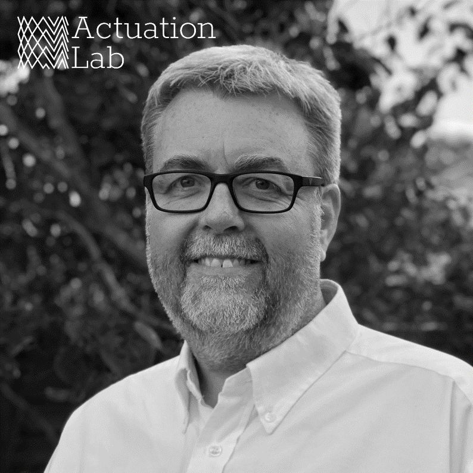
Actuation Lab are pleased to announce another milestone in their continued growth with the appointment of Dr Steve Kitson as Chair.
Simon Bates, CEO, said "We are delighted to welcome Steve to the team at Actuation Lab. Steve has worked closely with us as a trusted advisor for the last 12 months,
and this formal appointment allows us to mature our organisation and company direction. Steve has a wealth of experience in aiding technology companies achieve their
potential and we are very much looking forward to working with him to help shape Actuation Lab's future."
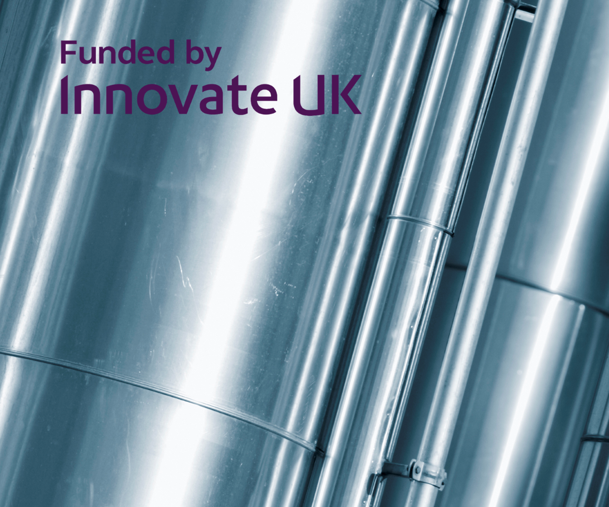
The UK has pledged to reach Net-Zero carbon emissions by 2050. Actuation Lab are fully on board with
the programme and pledge to do our bit to achieve that goal as we scale. We are pleased to announce
that we have just been awarded an SBRI Sustainable Innovation Fund project, funded by Innovate UK.
This project is supported by Bristol Water and the Oil and Gas Technology Centre. This project will see
our team assess how we can utilise our technology to reduce greenhouse gas leaks (fugitive emissions) on gas
distribution networks and reduce energy used in pumping in the utilities sector.
Innovate UK, as part
of UK Research and Innovation, is investing up to £191 million to fund single and collaborative research
and development projects as part of the Sustainable Innovation Fund over the next two years. The aim of
these competitions is to help all sectors of the UK rebuild after the effects of COVID-19.
The Sustainable
Innovation Fund is funding 1,103 projects, 1069 UK businesses and totalling over £130 million in support
across the UK.
Innovate UK Executive Chair Dr Ian Campbell said:
“In these difficult times we have seen the
best of British business innovation. The pandemic is not just a health emergency but one that impacts society
and the economy.
Actuation Lab’s project developing net-zero flow control solutions, along with every initiative
Innovate UK has supported through this fund, is an important step forward in driving sustainable economic development.
Each one is also helping to realise the ambitions of hard-working people.”

Actuation Lab have been chosen from 150 applications from 37 different countries to take part in the TechX accelerator program. This will significantly accelerate our path to market and industry trials, and allows us to develop our technology towards a sustainable, net-zero future. Read more here.
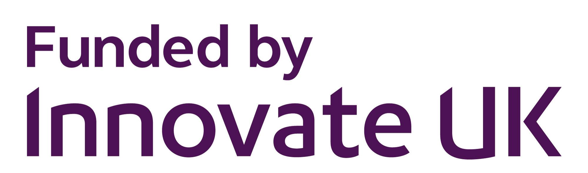
Following on from completing the ICURe programme for market validation, Actuation Lab have been awarded a £300k Innovate UK grant to commercialise our technology and develop products ready for industrial trials. Read more here.
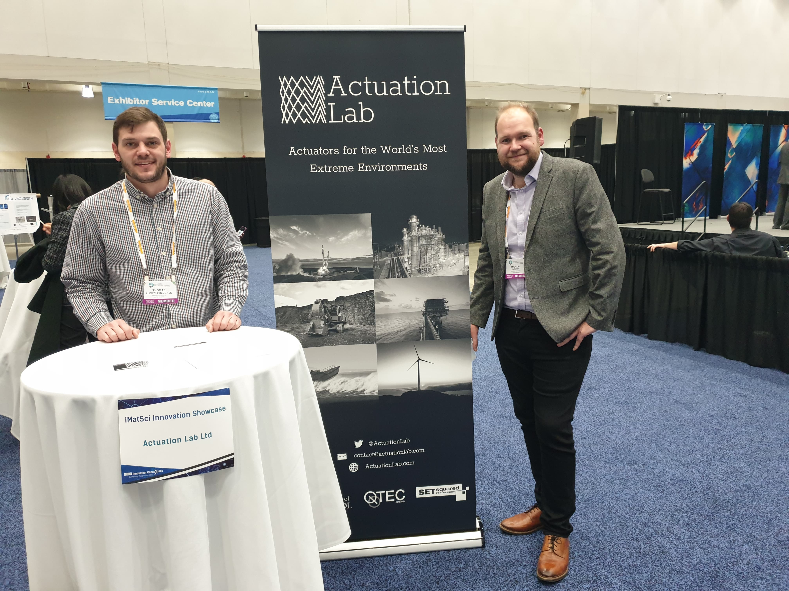
As Actuation Lab seeks to finalise its first round of investments, the team is hard at work with pitches both at the SETsquared Accelerated Growth Investment Showcase in London and the iMatSci Competition at the Hynes Convention Center in Boston. Amazing feedback and lots of leads to follow up in the coming days. Thanks to all who spoke to us.
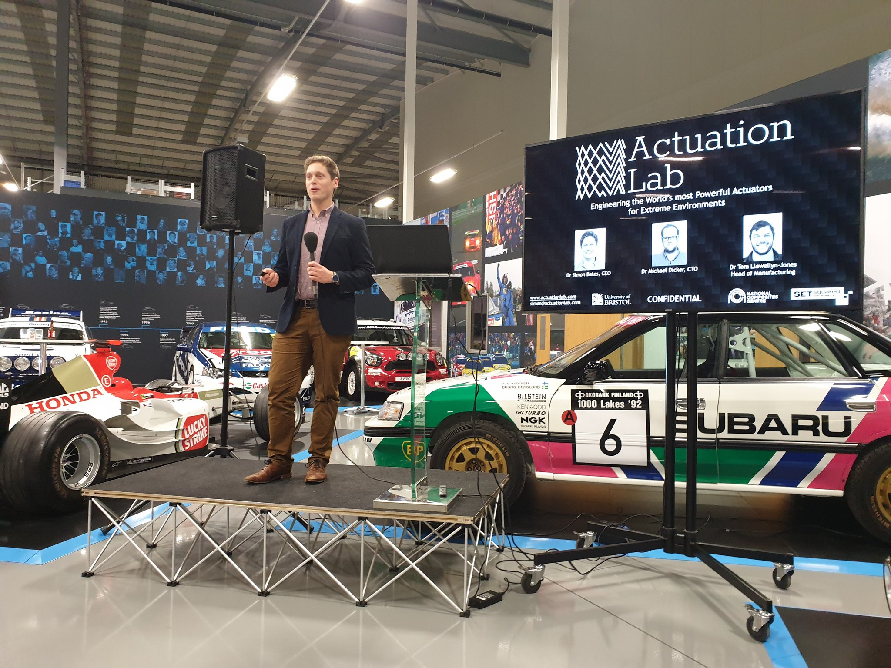
Actuation Lab secured runner up in the Prodrive Ventures RAPID Challenge , winning a share in the £50,000 prize package including £10,000 of IP advice from IP Asset and business development advice from KPMG. The RAPID Challenge was set up to catalyse the rapid development of hardware businesses from across the UK.
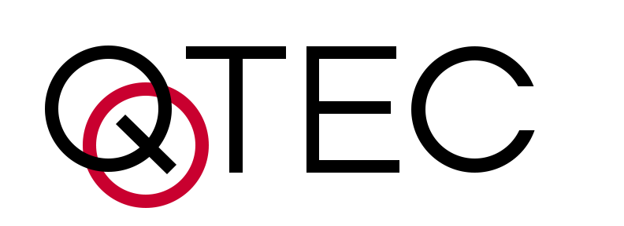
CEO Simon Bates has secured an Enterprise Fellowship at the world-leading QTEC Incubator in Bristol. QTEC will support Simon with training and funding over the next 6 months as Actuation Lab raise investment and begin operating outside of the University of Bristol.
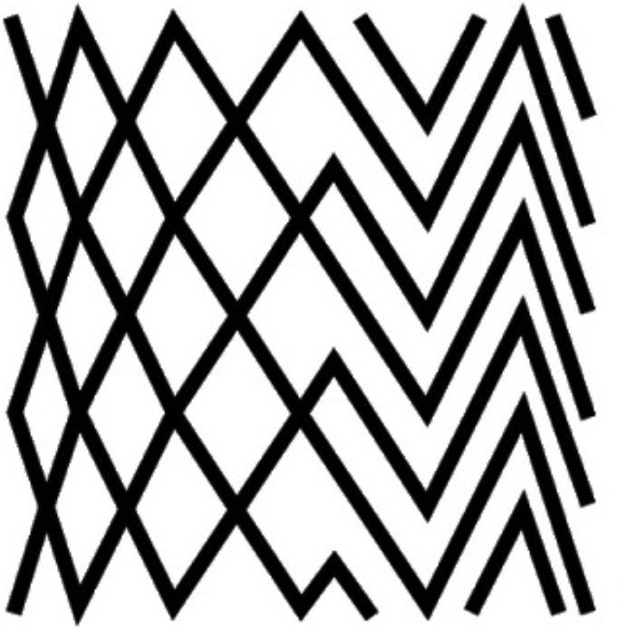
Actuation Lab are seeking investment to support the development of actuators for extreme environments. The funding will cover an 18 month period, and will allow Actuation Lab to accelerate technical development and produce our first commercially ready actuators.
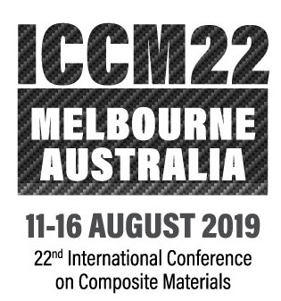
CTO Michael Dicker travelled to Melbourne, Australia to attend the 22nd International Conference on Composite Materials. Discussions with leading composites experts helped us to improve techniques in our manufacturing process.
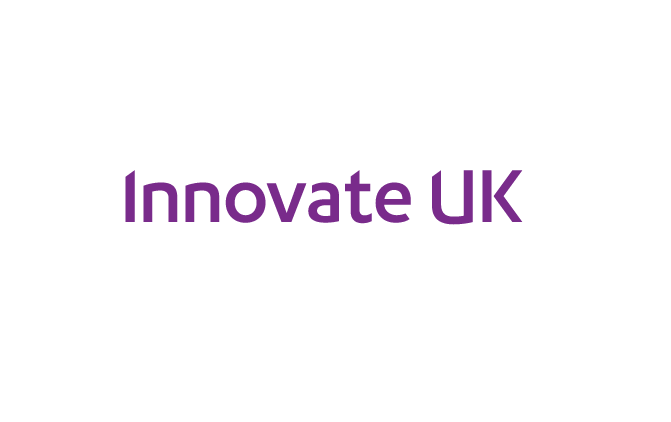
We are delighted to announce that we have secured follow-on support from the ICURe program, and have been invited to apply to a closed Innovate UK grant fund. The ICURe panel were please with the market validation performed by CEO Simon Bates, and have recommended the business for spin-out.
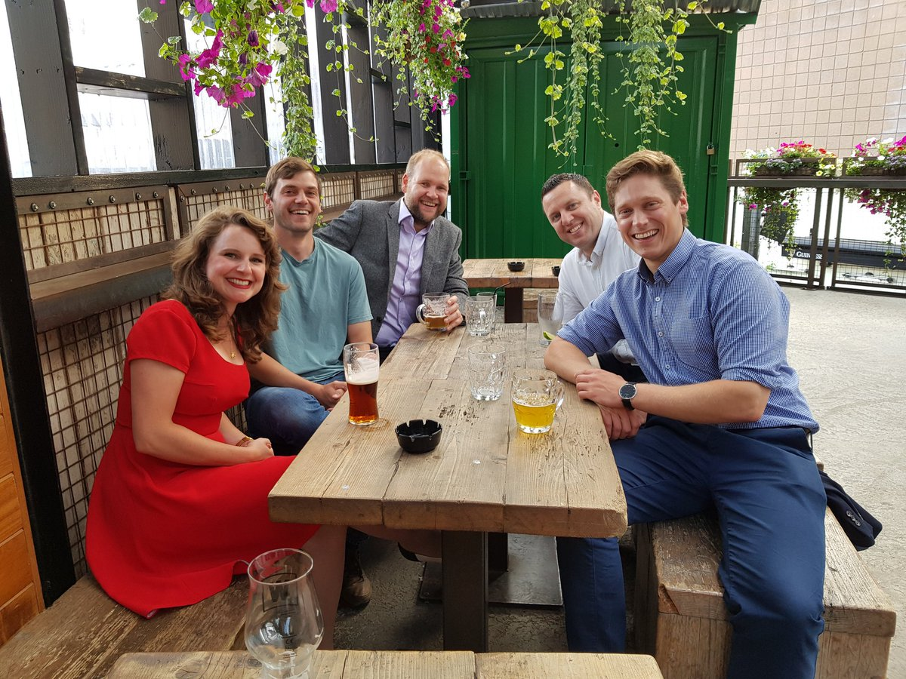
At the end of 3 months of market validation, CEO Simon Bates pitched to the ICURe panel for follow-on funding and support. The whole team travelled to Belfast for the event, including our Technology Transfer Officer Dr Lauren Ellse (pictured far left) and Business Adviser Pete Stirling (pictured one from right).

Actuation Lab were excited to exhibit our novel approach to creating fluid powered actuators in public for the first time at SETsquared Bristol’s annual Tech-Xpo. With attendees consisting of potential clients, investors, partners, and influential business leaders this event was invaluable in expanding our network, and we even made the trophy for the best pitch award.
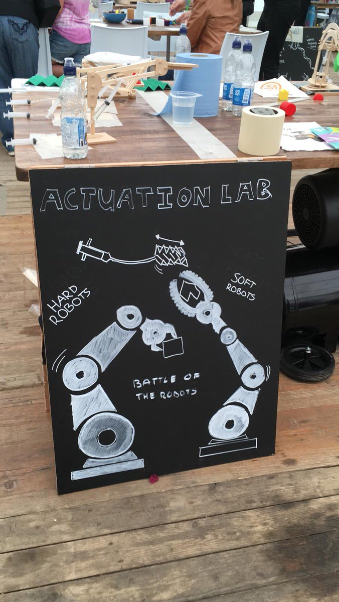
Actuation Lab members joined University of Bristol PhD Students to teach the working principles of hydraulic actuation using a varitety of syringe-powered robot arms at the Makershack in Cheltenham Science Festival 2019.

Actuation Lab are thrilled to announce that we are celebrating setting sail on the next leg of business development having been awarded ICURe funding!

CTO Michael Dicker was invited to represent Actuation Lab and take part in a panel discussion on 'Working for Tech Start-ups' as part of University of Bristol career service's 'Tech-Week'. The event was attended by around 40 undergraduate students from the university, keen to find out about career opportunities with emerging tech companies in Bristol.

Actuation Lab has started at SETsquared Bristol, based in Brunel’s historic Engine Shed. It is regarded at the world’s number one university-linked business incubator . As a new member we had the opportunity to do an introductory pitch at the festive connect event sponsored by Hazlewoods Innovation.

Actuation Lab attended the Materials Research Society Conference in Boston last week. This is a giant annual conference, and a must-attend for those that work with novel materials. This year a specific symposium was held on materials for next generation robotics including some great talks of relevance to us. A highlight was meeting the team behind the HASEL actuators, a very different technology to our own. We also had an opportunity to present to the Human Computer Interaction group at MIT, which was a great opportunity to get more opinions on our technology.

Actuation Lab was delighted to receive the runner’s up prize in the Bristol New Enterprise Competition, which will give us 12-months of membership to the world’s number one University business incubator, SETsquared . We would like to thank all the sponsors of the event, and congratulate the winners and colleagues (pictured) of ours in composite research, iCOMAT.

The Actuation Lab 3D printed actuator design tool was presented to researchers from a variety of UK universities. It was great to see interest in our technology from the wider 3D printing community.

Actuation Lab visited the International Robotics Showcase in Liverpool, the pinnacle event of UK Robotics Week 2018, to meet exhibitors and see the launch of white papers in Urban Automation & Transport as well as robotics in AgriTech. A highlight for us was meeting the team from React Robotics and their 3D printed ‘dog-bot’.

Actuation Lab was successful in receiving funding in the second round of the University of Bristol’s annual New Enterprise Competition (sponsored by Santander). The funding will be used to continue prototype development and to continue visiting potential clients around the UK to further validate the business.